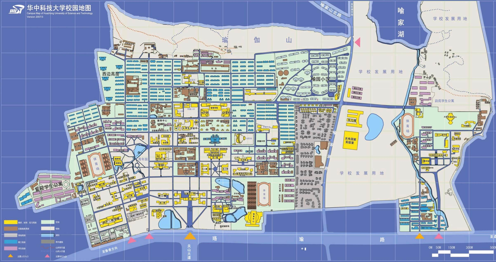

首页
组委会
大会流程
论坛
特邀讲者
墙报和演示
会议注册
交通和酒店
赞助商
下载
VALSE
2016
HOTEL & VENUE
华中科技大学 位置信息
会议地点
华中科技大学
地址：湖北省武汉市武昌洪山区珞瑜路1037号华中科技大学
具体会议地点 待定
交通
武昌站 --> 518/593/738路公交 --> 珞瑜路关山口站下车 [全程35分钟]
汉口站 --> 轨道交通2号线 --> 光谷终点站 --> 518/593/738/703/702/521路公交 --> 珞瑜路关山口站下车 [全程55分钟]
武汉站 --> 轨道交通4号线 --> 鲁磨路光谷广场 --> 518/593/738/703/702/521路公交 --> 珞瑜路关山口站下车 [全程1小时15分钟]
武汉站 --> 643路公交 --> 珞瑜路关山口站下车 [全程1小时20分钟]
武汉天河国际机场 --> 机场大巴(晚8点前) --> 傅家坡长途客运站 --> 518/702/521路公交 --> 珞瑜路关山口站下车 [全程2小时15分钟]
会场附近酒店
华中科技大学 校内地图
下图为示意图，清晰版本地图请点击查看/下载（10M，请在 WIFI 环境中下载）
